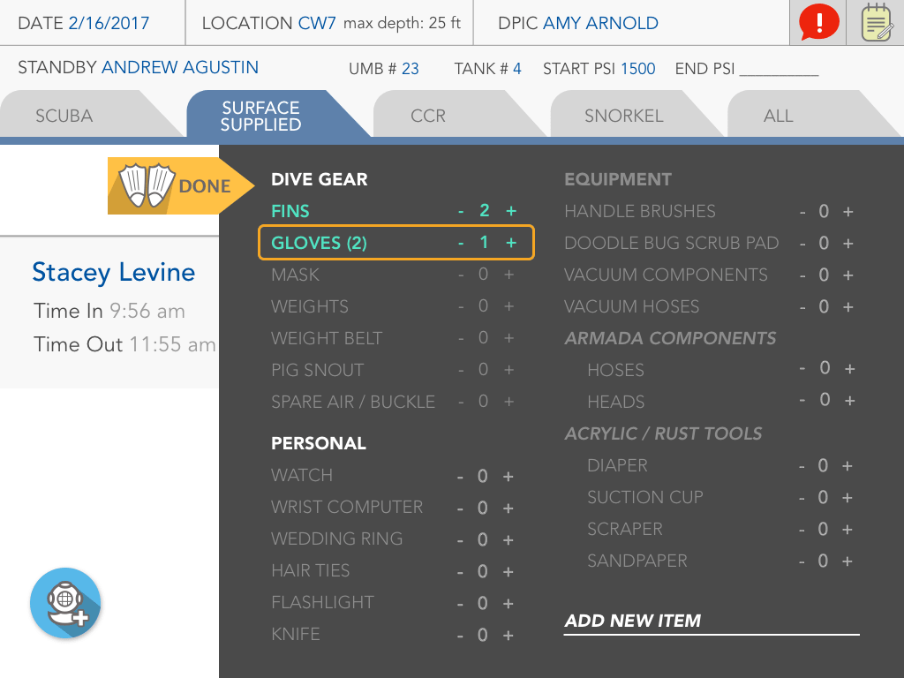

Dive Log
Try it outTHE CHALLENGE
Dive Operations at the Georgia Aquarium manages all diving activities of the 120 volunteers and staff. A dive log is necessary for the purposes of safety and record keeping. This log may contain information such as date, time, location, dive profile, conditions, and divers. It can provide data important in day-to-day aquarium operations, as well as valuable data in case of a diving accident.
GOALS
APPROACH/STRATEGY
Applying Google Venture's "Sprint Methodology" to our 3-week project.
Day 0: Learning Sprint
Day 1: Meeting the Stakeholders
- Met with stakeholders to discuss the pain points and what they envision the ultimate goal to be: "to make an easy to use dive log tablet app."
- We got a workflow of how the current process goes: 1) Getting tasks from the "Tender" 2) Then after divers are done, fill out dive logs into paper form, then into the computer.
- We then made a mind map of the problems and phrased them in the form of "how might we __?" questions.
- Lastly, we finished a competitive analysis of similar dive-log applications.
Day 2: Affinity Diagram
- We put our notes together to get a better understanding of what we need to do with the project.
Day 3: Conceptualizing our app
- Individually, we made our own variations of how the app should look like based on our findings. We then gave each other feedback on what was great or not, then proceeded on to merging our ideas together.
Day 4: Visit to the field
- Met the multiple users of the current app to get better insight on their pain points.
- Asked them further questions to get a better understanding of their current workflow.
- Asked the main stakeholder what ideal features he would like to see in the app.
Day 5: Sketches & Prototype
- Mapped out 2 user flow journeys (Ocean Voyager/Guests and Mammals).
- Had a victory with how to information architect the diver fields (nest time in/out under diver name, while the start/end PSI are separate boxes along the same field). This was inspired by object-oriented design principles (thanks JSON!).
- Got a clickable prototype working with Invision.
PROCESS/RESEARCH
Remaining 2 weeks
After the first week, we went with the more traditional UX process of constant iterations. We would discuss the pain points and new information gathered from the user tests, come up with ways to compartmentalize fields or information, run more user-tests, redo the designs, create the prototypes, and user test again. The very last thing we did was focus on aesthetics and the style-guide — this would make the prototype more "app-like" and provide a sense of polish.
Design Thinking Applied
1. Removed scroll-directory of divers because people rarely scroll through thousands of divers to find a person. Instead, we replaced the scroll-directory with a “add diver” button and auto-complete text abilities.
2. Consolidated “time in/out” into diver field to establish its relationship to diver ...rather than time being an independent component.
3. Error handling with Inventory Checklist: bold the items that have been initially entered. Then, upon checkout the non-applicable items are greyed out. Plus, orange rectangles will act as error handling clues). 
WHAT I LEARNED
Even with small changes like how to handle a selection element (to make it a dropdown, scroll, toggle button) would take a whole afternoon of discussion. I learned to not take some designs so personally and to understand the reasonings that drive designs that's so crucial rather than any "cool factor."
For example, when discussing the Air/Trimix as a scrollable toggle instead of a dropdown, because it was so unique to a certain flow that didn't conform to the rest of our design, we decided to treat it as the abnormality because we wanted users to know it was a special case for a special user flow.
Tools
SurveyMonkey, Google Forms, Sketchapp, Invision, Keynote